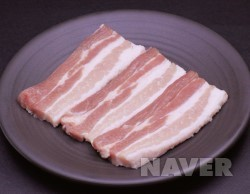

- 돈까스
- 삼겹살
- 소고기
삼겹살이란 무엇인가?

삼겹살은 제5갈비뼈 또는 제6갈비뼈에서 뒷다리까지의 등심 아래 복부 부위이다. 복강지방과 갈매기살, 오돌삼겹살을 제거하고 피하지방의 두께를 7mm 이하로 정형한 것이다. 삼겹살은 근육과 근간지방이 세 개의 층을 이루고 있다고 해서 붙여진 이름이다. 지방과 근육이 적당한 두께로 층을 이루고 있는 것을 양질로 친다. 삼겹살은 지방의 함량이 높고 단백질이 적지만 지방의 고소한 맛과 육단백질의 구수한 맛이 조화를 이루어 모든 사람들의 입맛을 사로잡는다.
삼겹살은 지방의 함량이 지나치게 높다는 것이 단점으로 지적된다. 그러나 비타민과 미네랄이 적당히 함유되어 있고 식감이 부드러우면서도 식감이 좋은 것이 장점이다. 돼지 한 마리당 약 12kg 정도 생산되는 삼겹살은 위치에 따라 그 형태와 조성의 변이가 크기 때문에 각 위치에 따라 요리의 용도를 다르게 하는 것이 좋다. 삼겹살은 주로 구이용으로 이용되는데, 외국에서는 염지하여 가공한 베이컨으로 이용된다. 우리 나라에서는 수육과 보쌈 등 폭 넓은 요리에 쓰인다.